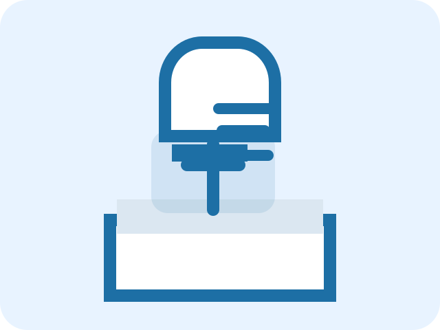

Specialized Doctors
A professional medical team in cardiology, dentistry, women’s health, pediatrics, and nutrition.
Comprehensive Medical Care
We provide complete family care with a team of specialists and modern medical technology.

A professional medical team in cardiology, dentistry, women’s health, pediatrics, and nutrition.
Services tailored to each patient with the highest quality standards.
Ongoing health follow-up and medical advice always available.
Trusted Expertise
We use the latest treatments and provide a safe, comfortable medical environment. The center delivers integrated care for physical and mental wellness.
Learn More About UsThis audio player now uses a local WAV track provided with the site.
If you do not hear audio, make sure your device volume is up and the browser is not muted.